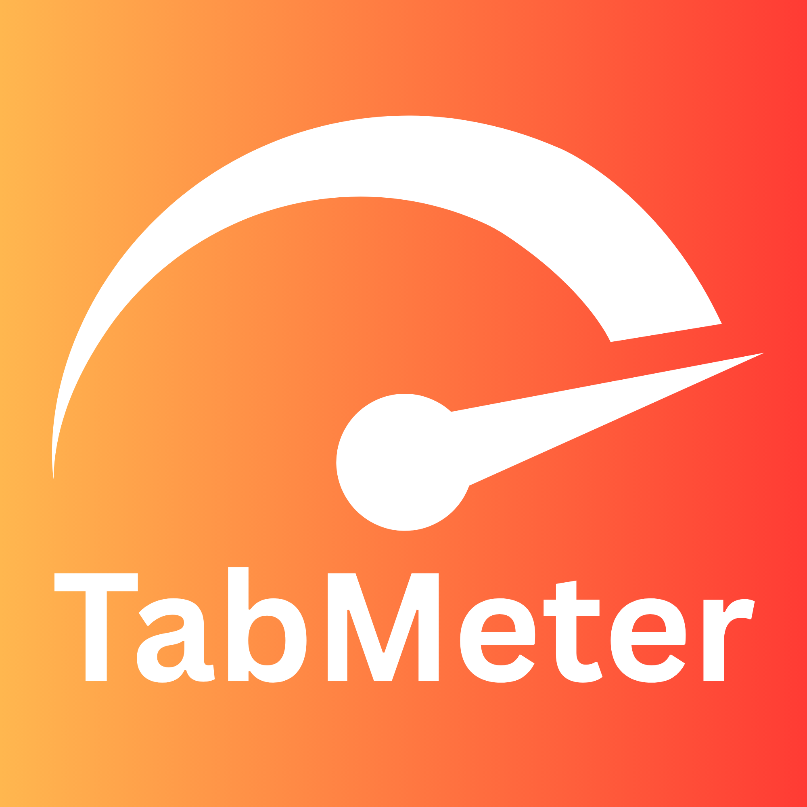

Last updated: May 1, 2026
This extension helps you see how much time you spend on websites while a normal web tab is focused and you are active at your computer. We designed it to align with transparency expectations described in the Chrome Web Store Program Policies and the Chrome Web Store Developer Agreement.
example.com) derived from the URL of the active tab,
only for http: and https: pages.
All of this stays on your device using Chrome’s extension storage. We do not send your browsing or time data to our servers. There is no account, analytics SDK, or third‑party advertising in this extension.
You can remove all stored data by uninstalling the extension or clearing extension data for this extension in Chrome settings. The extension only records time according to the rules above; it does not change page content or inject scripts into websites for tracking.
For questions about this policy, use the contact information you provide on your Chrome Web Store listing (muhammadzaryabrafique@gmail.com).